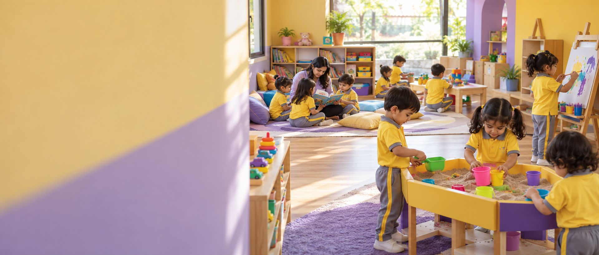
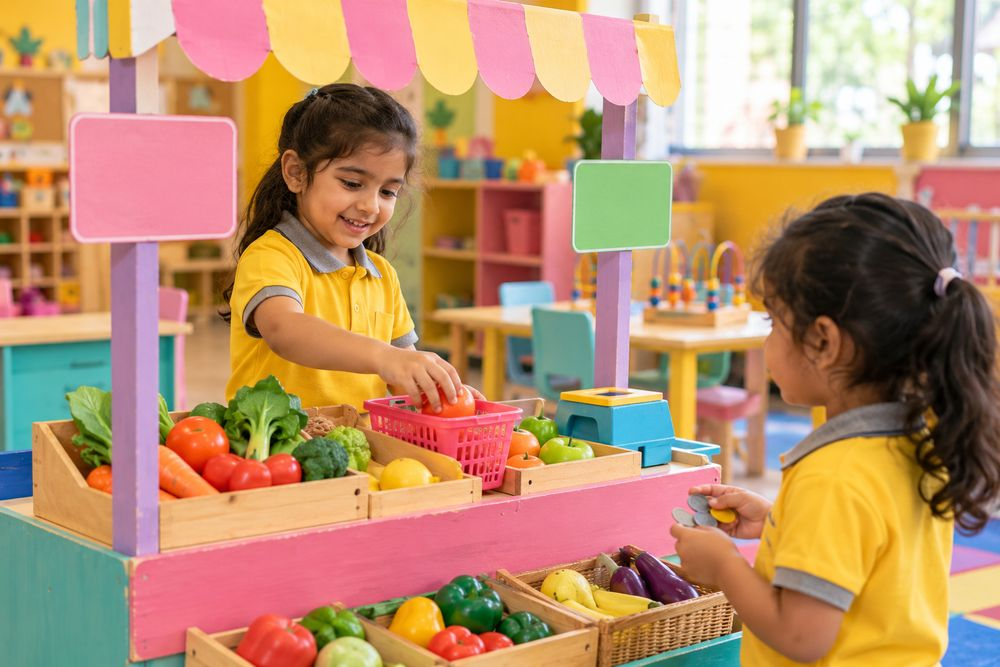
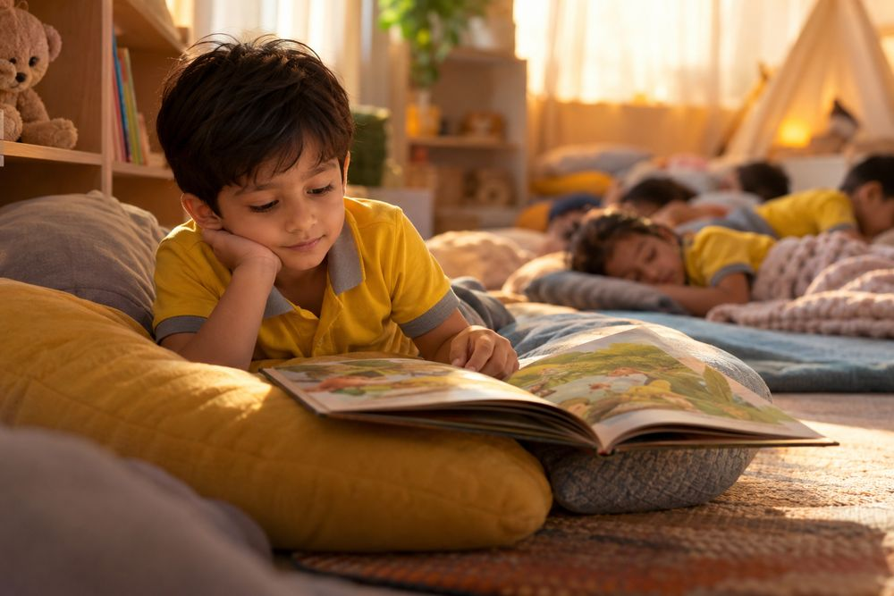

The hard mornings.
Some days a child cries at the door for a week. We don’t distract them while you slip out — that makes tomorrow worse. We say goodbye properly and stay with them through it.

It’s the question every parent asks, and most preschools answer with a list of facilities. Here’s the honest version instead: hour by hour, for three different children, on an ordinary Tuesday.
Because a child of three cannot tell you.
You’ll ask what they did and they’ll say “playing,” or “nothing,” or occasionally something so specific and strange that you’re no closer to knowing.
So rather than describing our philosophy again, here’s the day itself. Nothing on this page is a showcase day. There’s a spilled snack, a child who doesn’t want to join in, and a nap that runs over.
9:00 to 11:20 · 2 hours 30 minutes
He’s fine at the door today. Yesterday he wasn’t. His teacher takes his bag, says his name, and shows him that the dough is out — which settles the matter.
Dough, then abruptly the water tray. Two-year-olds move between activities every few minutes and this is developmentally correct, not a failure of concentration. An adult sits at the water tray narrating: pour, full, empty, splash. He repeats “splash.” That’s the lesson.
Twelve minutes, which is about the ceiling at this age. A hello song using every child’s name, the weather, one short story with a repeated line the children can join in on.
He opens his own box. It takes a while. Nobody opens it for him.
Climbing, a slide, a wheeled thing he refuses to give up. There’s a small dispute about the wheeled thing. His teacher doesn’t resolve it for them immediately — she waits, then offers the words: “Can I have a turn next?”
The same book as yesterday. And the day before. This is on purpose; repetition is how the language embeds.
He tells you nothing. He is, however, extremely tired.
9:00 to 12:30 · 3 hours 30 minutes

A short activity waiting on her table — today, matching lowercase letters to pictures. Starting with intent, rather than drifting for twenty minutes.
The fortnight’s theme is the market. Yesterday they made a shop. Today they’re deciding what things cost, which turns into a longer argument about money than anyone anticipated. The teacher lets it run, because it’s arithmetic.
Phonics through sound games. Today’s sound is sh. They hunt the room for things that start with it. Meera finds a shoe, a shell and — after some debate — a shadow.
Unstructured, and protected. She plays shop.
Sorting the shop’s stock by size, then counting into groups of five. Real objects, in her hands.
A game with rules, which today collapses twice over fairness and gets rebuilt both times. This is the social curriculum, and it’s largely invisible.
The shop needs a sign. Yesterday’s sign is still there, which is the point — she’s returning to something she started, which is executive function being built.
What did we do, what surprised us, what’s next.
She reports that she made a shop. This time you have some idea what that involved.
9:00 to 12:30, then daycare until pick-up · 6:00 to 8:00

Reading, writing, mathematics, project work, outdoor games.
Most children go home. Kabir doesn’t, and this moment is handled carefully, because watching everyone else leave is a genuinely difficult thing for a five-year-old. He moves rooms with a familiar adult and there’s something specific waiting for him.
Lunch
Not necessarily sleep at five, but rest. Cushions, dim light, a story, no demands. Children who don’t sleep read or draw quietly.
His choice entirely. Long, unstructured, unpushed. After a structured morning this is not a gap in the day — it’s the part he needs most.
Snack
Something optional and different from the morning — art, music, a construction project, a game.
Quieter play, books, and increasing attention to the door.
Whenever you arrive, someone tells you about his day properly. Not “he was fine.” What he did, what he ate, and whether anything was difficult.
Some days a child cries at the door for a week. We don’t distract them while you slip out — that makes tomorrow worse. We say goodbye properly and stay with them through it.
A group gets fascinated by something unplanned and the timetable is abandoned. This is allowed. Occasionally it’s the best day of the fortnight.
Some children watch for a long time before participating, and watching is a legitimate way of learning. Nobody is dragged into circle time.
We’d rather you visited mid-morning, while it’s noisy, than at four o’clock when everything’s been tidied. Ask to see a session running.
Book a visitOr call us on +91-8400 15 8500